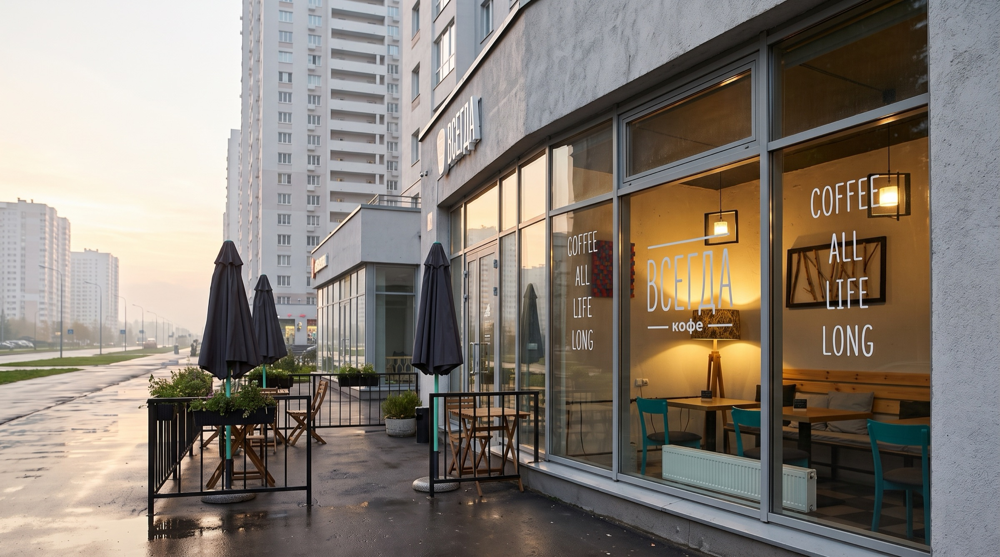
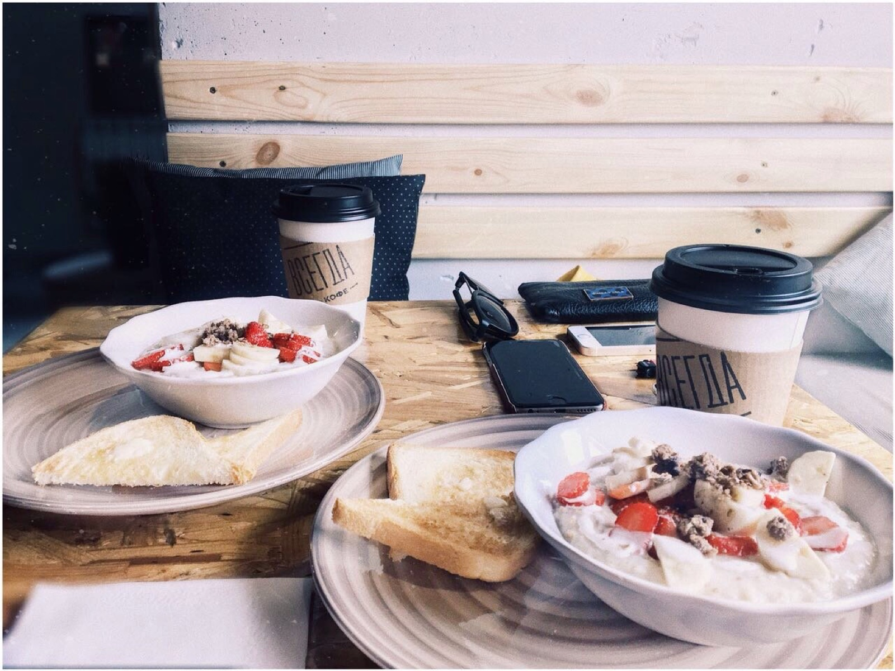
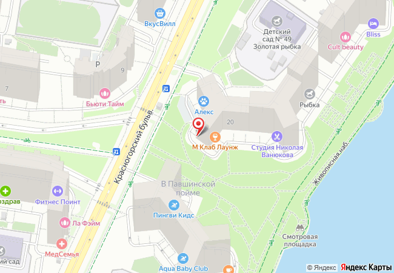

Кофейня у набережной, где с 2017 года варят фильтр, пекут своё и делают кофе ровно так, как вы попросили.
Позвонить+7 985 237-44-20
Сюда заходят с собакой после прогулки у реки, с ноутбуком поработать и за фильтром по пути на занятия.

Их нежные сырники и фильтр на зерне от Сварщицы — стопроцентное попадание… Ребята открылись еще в начале 2017 года, когда вокруг Пойма была сплошной бетонной стройкой… можно спокойно забежать с собакой после прогулки у реки или поработать в тишине с ноутбуком.
Вот уже почти 9 лет мы с мужем регулярно сюда ходим… Если у меня хорошее настроение — иду сюда, и если плохое — тоже сюда, чтобы выйти с хорошим. Большое спасибо Кате и Володе за создание такого замечательного места!
Интересный интерьер, который с удовольствием можно рассматривать пока ждёте свой заказ — много оригинальных идей и задумок. Очень вкусные и сытные завтраки — особенно Мексиканский омлет.
Я постоянный клиент с 2017 года… Есть стульчик для детей и миска с водой для собак. Удобный пандус и просторное крыльцо, чтобы посидеть в теплую погоду… Отдельный респект за вкуснейшие хот-доги.
Спустя пять лет все так же круто. Повару огромный респект за вкусную еду, а хозяевам — за шедевральные плейлисты, музыку из которых можно шазамить без остановки.

Что сегодня в меню и витрине, подскажут по телефону.